Referenzen / Projekte
Vom Einfamilienhaus bis zum Wohnkomplex mit 60 Wohneinheiten, vom Umbau einer Büroetage bis zur Sanierung von 53 Mehrfamilienhäusern im Harz.
Aktuelle Projekte


Aus den fertiggestellten Projekten


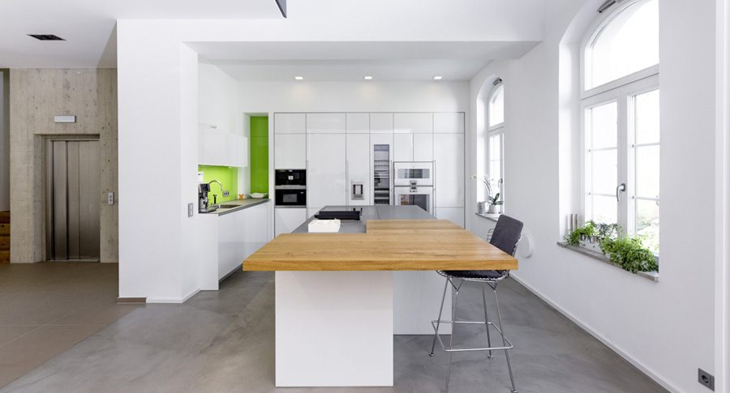

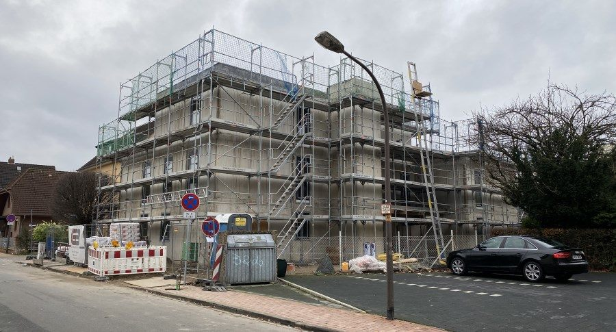
Alle Projekte im Überblick
61 Projekte aus dem Bestand des Büros. Die Vorschaubilder stammen aus der bestehenden Website und liegen dort nur in kleiner Auflösung vor; sie werden deshalb nicht vergrößert dargestellt.
 RTN20Umbau Büro- und Verwaltungsgebäude
RTN20Umbau Büro- und Verwaltungsgebäude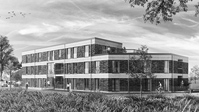
ARP00Bauen 4.0 – Neubau Mehrfamilienhaus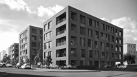
MST67Neubau Wohnkomplex mit 60 WEs NND01Neubau Mehrfamilienhaus mit 15 WEs
NND01Neubau Mehrfamilienhaus mit 15 WEs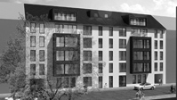
ALM21Neubau Wohnkomplex mit 39 WEs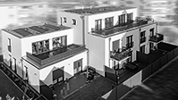
BCK09Bauen 4.0 – Neubau Mehrfamilienhaus AGD07Kernsanierung Mehrfamilienhaus
AGD07Kernsanierung Mehrfamilienhaus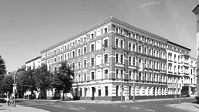
LBK30Umbau Büro- und Wohngebäude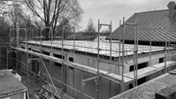
SHWPKBauen 4.0 – Neubau Gewerbegebäude HNN06Umbau Büro- und Verwaltungsgebäude
HNN06Umbau Büro- und Verwaltungsgebäude ANN02Neubau Mehrfamilienhaus
ANN02Neubau Mehrfamilienhaus PLZ09Neubau Einfamilienhaus
PLZ09Neubau Einfamilienhaus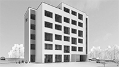
DGR24Neubau Co-Working HTR18Neubau Einfamilienhaus
HTR18Neubau Einfamilienhaus ALF06Umbau Verwaltung, Produktions- und Lackierhalle
ALF06Umbau Verwaltung, Produktions- und Lackierhalle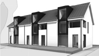
GTT81Neubau Stadthäuser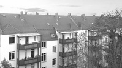
HSM07Sanierung Wohnkomplex KLM01Neubau Einfamilienhaus
KLM01Neubau Einfamilienhaus SCH20Fassadensanierung / Umbau innerstädtisches Bürogebäude
SCH20Fassadensanierung / Umbau innerstädtisches Bürogebäude LTH05Kernsanierung Mehrfamilienhaus mit 80 Wohneinheiten
LTH05Kernsanierung Mehrfamilienhaus mit 80 Wohneinheiten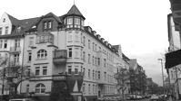
HSR06Fassadensanierung denkmalgeschützter Mehrfamilienhäuser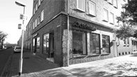
HLT01Umbau Bürogebäude / Servicebüro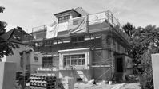
WLD38Umbau und Sanierung Stadtvilla BCS28Umbau Servicepunkt, Dach- und Fassadensanierung
BCS28Umbau Servicepunkt, Dach- und Fassadensanierung GLBLCNeubau Firmensitz mit Rechenzentrum
GLBLCNeubau Firmensitz mit Rechenzentrum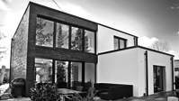
SSS71Neubau Einfamilienhaus BMF21Südstadt-Villa
BMF21Südstadt-Villa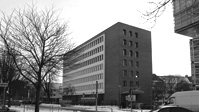
BRH09Kernsanierung Büro- und Verwaltungsgebäude UNT50Fassadensanierung / Umbau innerstädtisches Bürogebäude
UNT50Fassadensanierung / Umbau innerstädtisches Bürogebäude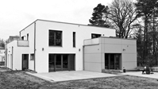
TRT31Neubau Einfamilienhaus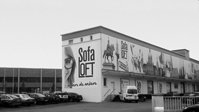
SFLFTRevitalisierung Möbelhaus Industrie-Loft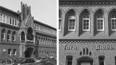
TKHMODUmbau und Sanierung Hauptgebäude TK Hannover SHWPAnbau Pavillon Seehaus Wietzepark
SHWPAnbau Pavillon Seehaus Wietzepark TKHHANeubau Bewegungszentrum
TKHHANeubau Bewegungszentrum TKHBUUmbau Sporthalle TKH-List, Kindersportzentrum
TKHBUUmbau Sporthalle TKH-List, Kindersportzentrum WN377Umbau Büroetage in Hamburg
WN377Umbau Büroetage in Hamburg TST16Umbau Büroetagen
TST16Umbau Büroetagen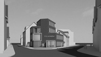
BKS53Wettbewerb Geschäftshaus mit Penthouse WBGSASanierung von 53 Mehrfamilienhäusern, Harz
WBGSASanierung von 53 Mehrfamilienhäusern, Harz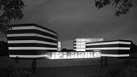
GTBK5Neubau Bürokomplex TKHTRUmbau Gesundheitsstudio Turn-Klubb zu Hannover
TKHTRUmbau Gesundheitsstudio Turn-Klubb zu Hannover TCH02Umbau und Sanierung denkmalgeschütztes Wohnhaus
TCH02Umbau und Sanierung denkmalgeschütztes Wohnhaus FLK24Revitalisierung Mehrfamilienhaus
FLK24Revitalisierung Mehrfamilienhaus SYLMSNeubau Zweifamilien-Ferienhaus auf Sylt
SYLMSNeubau Zweifamilien-Ferienhaus auf Sylt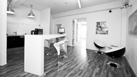
STILXUmbau Architekturbüro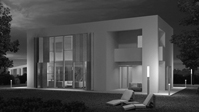
STD20Entwurf Stadthaus MRNNBProjektentwicklung Nienburg, Wohnkomplex „Parkresidenz“
MRNNBProjektentwicklung Nienburg, Wohnkomplex „Parkresidenz“ KRZBNNeubau Seniorenresidenz in Bad Nenndorf
KRZBNNeubau Seniorenresidenz in Bad Nenndorf LNGVHLoge im Stadion von Hannover 96
LNGVHLoge im Stadion von Hannover 96 DSTBDUmbau und Erweiterung Deisterbad Barsinghausen
DSTBDUmbau und Erweiterung Deisterbad Barsinghausen PSTDWProjektentwicklung „Stadtnahes Wohnen“
PSTDWProjektentwicklung „Stadtnahes Wohnen“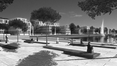
YCHMRWettbewerb Yachthafen und Marina, Ostsee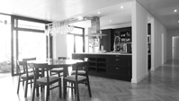
MNG16Umbau und Sanierung eines Bungalows RKS02Umbau und Sanierung eines innerstädtischen Mehrfamilienhauses
RKS02Umbau und Sanierung eines innerstädtischen Mehrfamilienhauses KT218Konzept und Lichtgestaltung Kontor218 in Hamburg
KT218Konzept und Lichtgestaltung Kontor218 in Hamburg PLTZRProjektentwicklung Altenzentrum Hannover
PLTZRProjektentwicklung Altenzentrum Hannover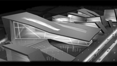
PLSDJWettbewerb Palais de Justice, Paris PMRKTProjektentwicklung Einkaufsmarkt Hamburg
PMRKTProjektentwicklung Einkaufsmarkt Hamburg BCHRSWettbewerb Beach Restaurant, Lincolnshire
BCHRSWettbewerb Beach Restaurant, Lincolnshire BCHHTWettbewerb Beach Hut, Lincolnshire
BCHHTWettbewerb Beach Hut, Lincolnshire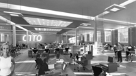
OTTOInnenraumplanung Umnutzung Lagerhalle, Hamburg